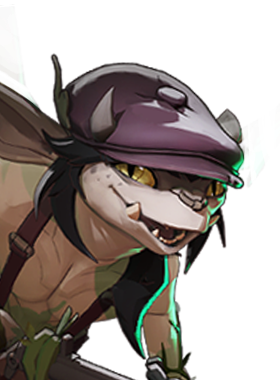

Mística que combina apoio e dano com habilidades em área.
História
Filha de um negociante de livros raros, Paige cresceu em um lar amoroso que priorizava a bondade, a magia e a narração de histórias. Mas embora Paige tenha aceitado naturalmente os valores de seus pais, seu irmão mais novo, Bryce, não. Um adolescente rebelde, Bryce se ressentia não apenas da atitude açucarada de sua família, mas também de sua recusa em deixá-lo se envolver em magias que eles consideravam muito perigosas. Paige tentou tudo o que pôde para mantê-lo longe de problemas, mas, como a maioria dos adolescentes, quanto mais sua irmã mais velha tentava lhe dizer o que era melhor para ele, mais ele se afastava. Paige não sabe o que Bryce fez para ser expulso de casa... só que ela voltou da biblioteca e encontrou seu irmão desaparecido e seus pais chorando. Os dias se transformaram em semanas, em meses, em anos. Paige cresceu e se tornou uma bibliomante talentosa, ganhando a vida como contadora de histórias lendo em bibliotecas dos cinco distritos; e embora seus pais tenham permanecido em silêncio sobre o que aconteceu com Bryce, a obsessão de Paige em encontrá-lo só aumentou. Ela descobrirá o que aconteceu com seu irmão... e nenhum homem ou deus irá ficar em seu caminho.
História oficial do jogo, traduzida automaticamente para o português.
Números reais
Habilidades

Invoca um dragão no local alvo que voa para a frente causando dano espiritual e deixando um rastro em chamas.

Dá a um aliado uma barreira que também aumenta o dano de arma dele enquanto durar.

Marca uma área com magia retardada que retarda inimigos e depois detona causando dano espiritual e imobilizando quem está dentro.

Envia cavaleiros espectrais pela cidade, curando aliados e ferindo inimigos, com ambos os efeitos crescendo com a distância.
Builds mais usadas
7.171 partidas registradas com esta build.
Rodadas de alta velocidade (800) · Rito de Cura (800) · Grão (800) · Ala dos Guardiões (1.600) · Espírito Extra (800) · Taxa Extra (800) · Botas de corrida (800) · Colecionador de Troféus (1.600) · Expansão Mística (800) · Regeneração Extra (800)
4.863 partidas registradas com esta build.
Rodadas de alta velocidade (800) · Grão (800) · Rodadas de Abertura (1.600) · Ala dos Guardiões (1.600) · Hex retardado (1.600) · Barril Enferrujado (800) · Perto (800) · Rodadas Monstruosas (800) · Rito de Cura (800) · Saúde Extra (800)
3.430 partidas registradas com esta build.
Rodadas de alta velocidade (800) · Rodadas de Abertura (1.600) · Ala dos Guardiões (1.600) · Colecionador de Troféus (1.600) · Tiro Expresso (3.200) · Taxa Extra (800) · Expansão Mística (800) · Derrubar (3.200) · Espírito Melhorado (1.600) · Resfriamento da compressão (1.600)
Confrontos reais
 Shiv — 62.4% de vitória
Shiv — 62.4% de vitória Mirage — 61.8% de vitória
Mirage — 61.8% de vitória Deadman Danny — 61.6% de vitória
Deadman Danny — 61.6% de vitória Silver — 60.9% de vitória
Silver — 60.9% de vitória Paradox — 60.4% de vitória
Paradox — 60.4% de vitória Pocket — 60.3% de vitória
Pocket — 60.3% de vitória
 Rat King — 49.0% de vitória
Rat King — 49.0% de vitória Seven — 51.3% de vitória
Seven — 51.3% de vitória Graves — 51.5% de vitória
Graves — 51.5% de vitória Victor — 51.8% de vitória
Victor — 51.8% de vitória Haze — 52.2% de vitória
Haze — 52.2% de vitória Kelvin — 52.3% de vitória
Kelvin — 52.3% de vitória
O que upar primeiro
Nível por nível, na ordem que os jogadores mais usam em partidas de verdade. A porcentagem mostra quantos escolheram aquela habilidade naquele nível.
Melhores duplas
Heróis que mais ganham jogando junto com ele, em partidas reais (pelo menos 1.500 partidas juntos).
- Graves63,7%
- Rat King63,1%
- Victor61,6%
 Dynamo61,4%
Dynamo61,4%- Haze61,3%
- Deadman Danny48,6%
 Solomon49,4%
Solomon49,4%- Pocket50,9%
Rota (lane)
Na rota, cada lado joga em dupla. Estes números são de confrontos reais: a diferença de almas é medida com o jogo já começado, então almas no verde significa que ele costuma estar na frente.
- Rat King — 48,4% de vitória −501 almas (5.970 partidas)
- Seven — 49,0% de vitória +89 almas (3.029 partidas)
- Graves — 49,8% de vitória +478 almas (3.187 partidas)
 Mo & Krill — 50,1% de vitória −291 almas (457 partidas)
Mo & Krill — 50,1% de vitória −291 almas (457 partidas)- Haze — 51,7% de vitória −259 almas (2.964 partidas)

Ivy — 52,4% de vitória +343 almas (972 partidas)- Holliday — 53,1% de vitória −227 almas (160 partidas)
- Dynamo — 53,5% de vitória −81 almas (2.512 partidas)
- Silver — 63,8% de vitória +249 almas (412 partidas)
 Venator — 61,9% de vitória −543 almas (2.003 partidas)
Venator — 61,9% de vitória −543 almas (2.003 partidas)- Shiv — 61,6% de vitória +388 almas (607 partidas)
Histórico de win rate
07/09: 49.2% → 26/10: 53.7% → 14/12: 55.3% → 01/02: 53.9% → 22/03: 52.0% → 10/05: 50.4% → 28/06: 53.0% → 16/08: 54.2% → 04/10: 56.9%